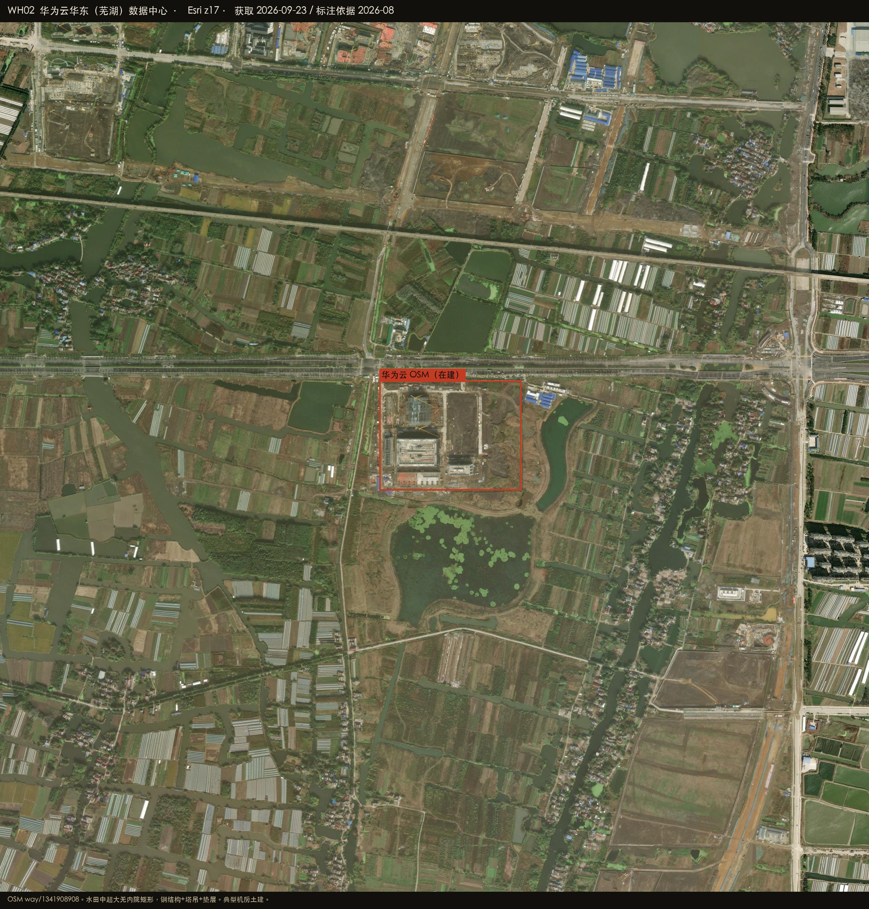
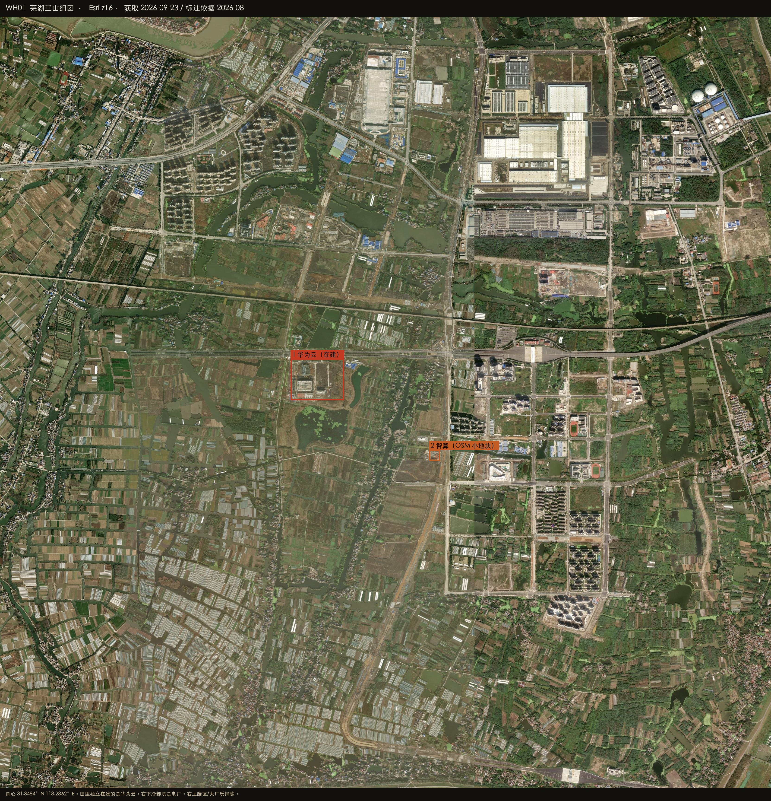
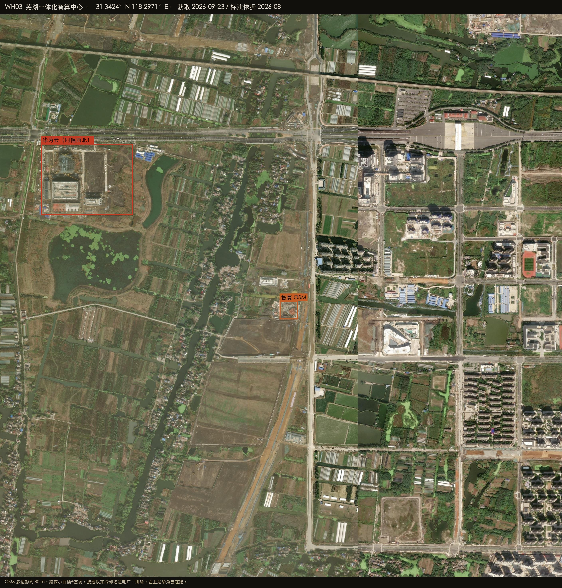

Datacenter Probe · 芜湖
31.3484°N 118.2862°E · r = 50 km
Esri World Imagery · 2026-08-27
Satellite reconnaissance · Anhui
芜湖周边数据中心建设情况
芜湖集群目前卫星上能钉死的是三山峨溪路一带、水田里那座华为云在建大厅：独立超大矩形、钢结构、塔吊、东侧垫层。东约 1.2 km 的一体化智算中心 OSM 多边形只有约 80 m，地面是小白楼加基坑。同幅接缝以东冷却塔是电厂。沿江罐区和大跨厂房不算机房。

HERO · 华为云华东（芜湖） · 水田中的超大矩形
在建 / 高置信机房
已投运 / OSM 具名
候选 / 业主待核
排除或不像机房
底图 Esri World Imagery（WGS84）
WH-HUAWEI · 在建大厅
OSM 具名。水田中超大无内院矩形，塔吊+垫层。
高 · 在建
WH-ZHISUAN · 小地块
OSM 三块嵌套约 80 m。白顶小楼 + 基坑。
中 · 小
排除 · 电厂
智算那幅接缝以东是电厂，不是机房。
排除
WH-DONGHUA · 圈缘
OSM 有名，距圆心约 47 km，本次未出图。
低
31.3484°N 118.2862°E
华为云华东（芜湖）数据中心
三山峨溪路南、水田中。OSM way/1341908908，31.3468–31.3500N 118.2838–118.2887E。
高置信 · 在建
- 超大无内院矩形，钢结构、塔吊、部分封顶
- 东侧刮地垫层说明还在扩
- 不是沿江厂房
华为云
在 Google 卫星图打开 ↗
PLATE WH02 · 华为云 · Esri z17

PLATE WH01 · 总图 · 田里那一座
31.3424°N 118.2971°E
芜湖一体化智算中心
华为云东南约 1.2 km。OSM way/1341908877 及嵌套的硅立方/数据中心楼，约 80–100 m。
中 · OSM 小地块
- 路西一栋白顶小楼 + 基坑/垫层，不是超大阵列
- 接缝以东冷却塔排除
- 东华金融云计算中心在圈东北缘，未出图
业主待核
在 Google 卫星图打开 ↗

PLATE WH03 · 智算 · 冷却塔排除
怎么判，什么不算
圆心在三山田里的华为云地块，不在芜湖市政府。Esri 接缝以东的冷却塔不要算进来。
算作机房
- 水田中超大无内院矩形（华为云，在建）
- OSM 具名须对照体量
明确排除
- 冷却塔 / 电厂
- 罐区、大跨白顶厂房
- 蔬菜大棚、水田、住宅
在 Google 卫星图打开圆心 ↗